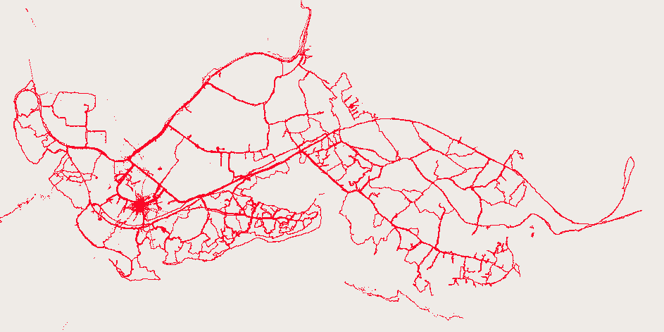

HOT's first project, a volunteer effort to map the Gaza Strip during the 2008-2009 war between Israel and Gaza, relied on Yahoo Maps and Digital Globe satellite imagery. Over seven days, OpenStreetMap volunteers traced the satellite imagery in order to produce a more accurate, more up-to-date map, and with assistance from JumpStart International, the map was available online and for download with no copyright restrictions. [13] This emphasis on placing map data (not just rendered maps!) in the public domain was intended to provide for the widest possible uses of the information, on both a technical and legal basis. In order to preserve this legal status, the OSM Gaza dataset was published separately from the main OpenStreetMap database, though in accordance with its liberal licensing, a copy was uploaded to OSM as well. Building on the success of the OSM Gaza project, HOT went on to collaborate with a variety of organizations in countries like India, Kenya, and Georgia, all using the OpenStreetMap toolset.
|

|
Two projects by HOT stand out as their most ambitious and influential. The first, called simply Map Kibera, produced a map of the famous Kibera slum in Nairobi, Kenya, in collaboration with several local organizations. This project differed from earlier HOT projects in that it relied primarily upon local participants using hand-held GPS units to produce the map, as well as with paper-based annotations using the Walking Papers system developed by Michal Migurski of Stamen Design. With a specific mission to engage with the sociopolitical aspects of cartography, Map Kibera is much more explicit than OSM Gaza in its agenda and the needs it addressed. It also represented a shift away from remote mapping by means of tracing, towards a model which relied more heavily on local expertise and familiarity with the site. In this sense it has much more in common with the Grassroots Mapping project; both attempt to empower local communities by buildling local capacity and ceding control over the mapping process to local individuals and organizations.
The second project of note is the map making work done in the aftermath of the January 2010 earthquake in Haiti.
The have been at least 400 OpenStreetMap editing sessions in Haiti since the quake hit. Mostly tracing Yahoo imagery, and gleaning information from old CIA maps. We also just received permission to use GeoEye imagery acquired post-event … that will allow us to tag collapsed buildings.[33]
`Sea change in the legitimacy of crowdsourced geographic data. For instance, all the United Nations agencies acting on the ground in Haiti used OpenStreetMap for their print maps'[21]